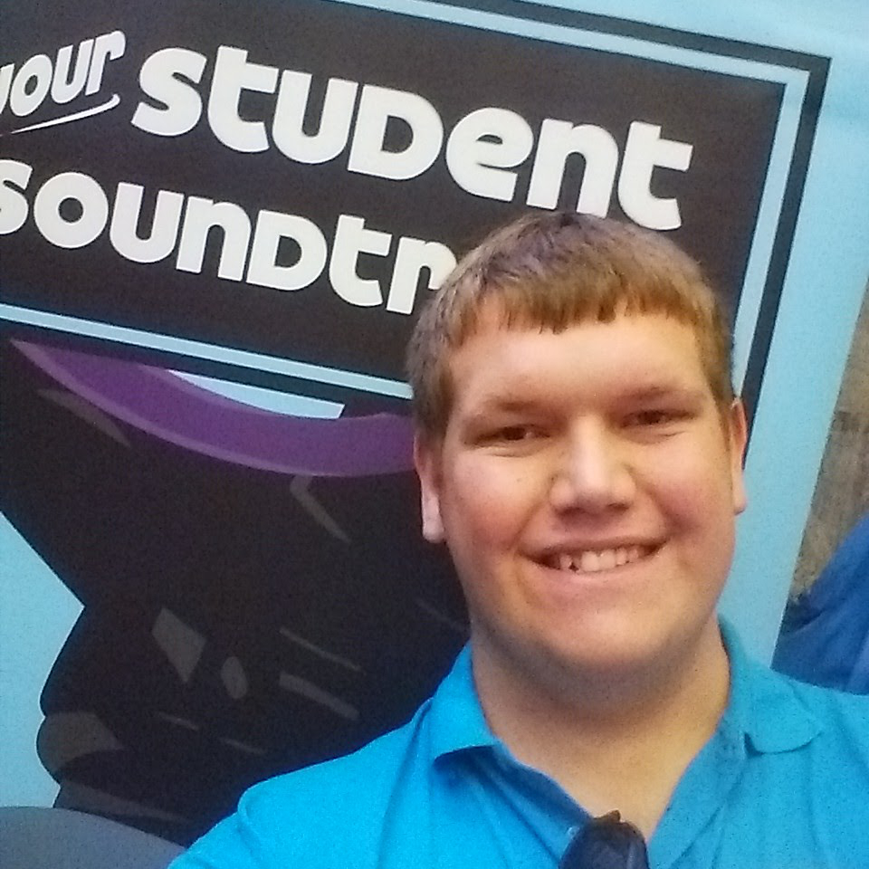
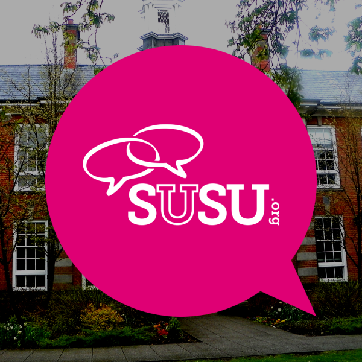
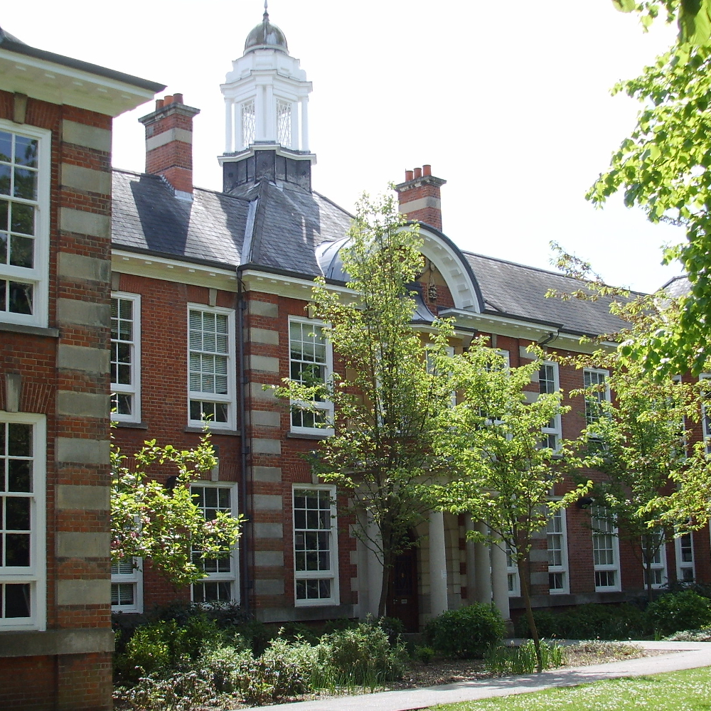

Samuel Dedman
History student and graphic designer

BA History Undergraduate
Studying with the University of Southampton
Involved in
Surge Radio
Head of Design for 2015/16, providing branding creation and development for one of the largest and most recognised student brands at Southampton
Academic Representation
History Academic President for 2015/16, representing the views of a large cohort of students in a wide range of academic and student life issues

Student Ambassador
Working alongside the Humanities Recruitment Team on a wide variety of events, ranging from UCAS Open Days to the main summer Visit Days
